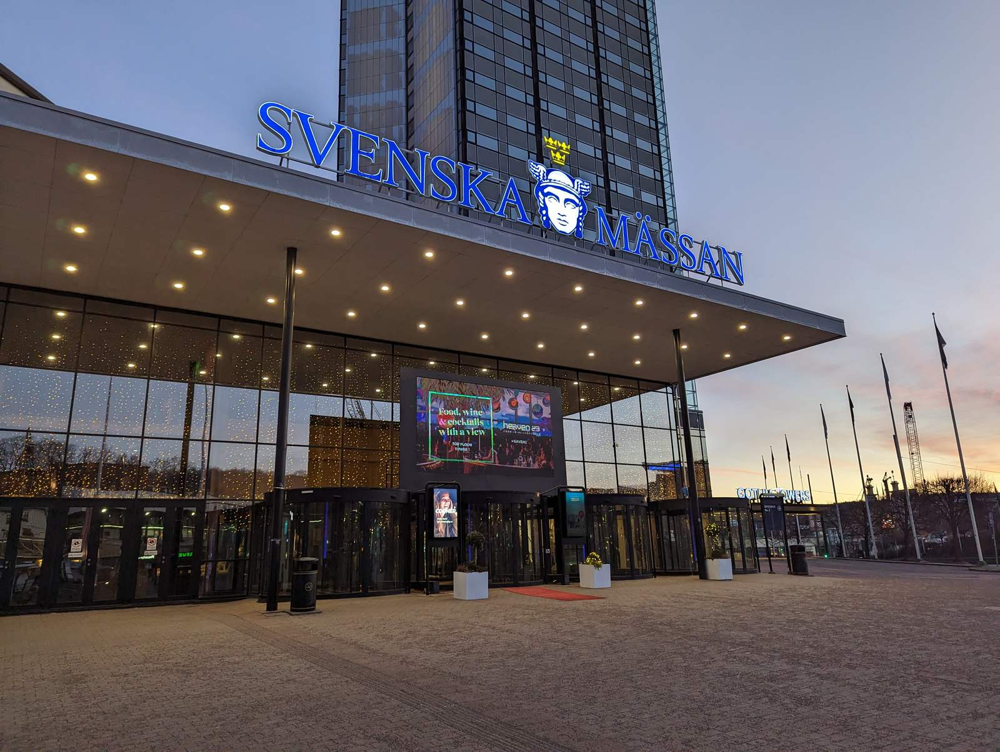
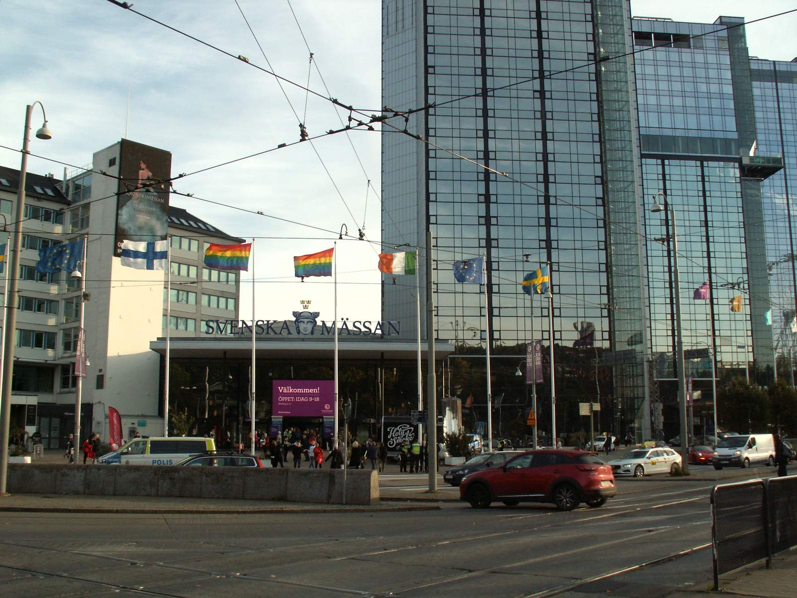

Venue · Convention centre
Svenska Mässan Gothia Towers
- Type
- Convention centre
- Location
- Gothenburg, Sweden
- Address
- Mässans Gata 24, 412 94 Gothenburg
- Capacity
- 9,000 capacity
- Exhibition space
- 41,000 m²
- Halls
- Official snabbfakta: 60 meeting rooms for 2 to 9,000 guests and a congress hall for 1,500; official halls page also mentions congress halls of 300–1,500 and groups from 2 to 8,800 guests
- Official website
- https://en.svenskamassan.se/
About
The Swedish Exhibition & Congress Centre (Svenska Mässan Gothia Towers) in central Gothenburg, with official entrance and visiting address Mässans Gata 24 / Mässans Gata–Korsvägen, postal address 412 94 Gothenburg. Official snabbfakta state that the meeting place is 180,000 sqm in total, of which 41,000 sqm is exhibition and congress area (mäss- och kongressyta), stored as exhibition_sqm; the 180,000 sqm campus figure is not stored as exhibition space. Official snabbfakta also give 60 meeting rooms for 2 to 9,000 guests, stored as capacity_max_delegates, a congress hall for 1,500 and fest/banquet for up to 7,000. An English halls page refers to groups from 2 to 8,800 guests; the Swedish official fact figure of 9,000 is preferred for the headline capacity.
Spaces
| Name | Type | Capacity | Area |
|---|---|---|---|
| Congress Hall | — | 1,500 | — |
Upcoming events
Sources
- Official source — https://en.svenskamassan.se/
- Official source — https://en.svenskamassan.se/explore-us/about-us/contact-us/
- Official source — https://svenskamassan.se/shared-contents/find-us/
- Official source — https://svenskamassan.se/utforska-oss/om-oss/snabbfakta/
- Official source — https://en.svenskamassan.se/explore-us/meetings/congress/halls-meeting-rooms/